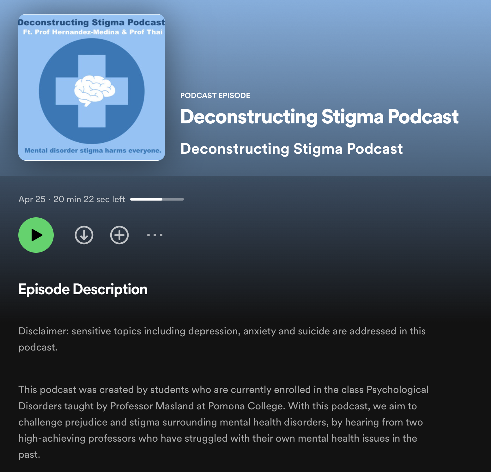
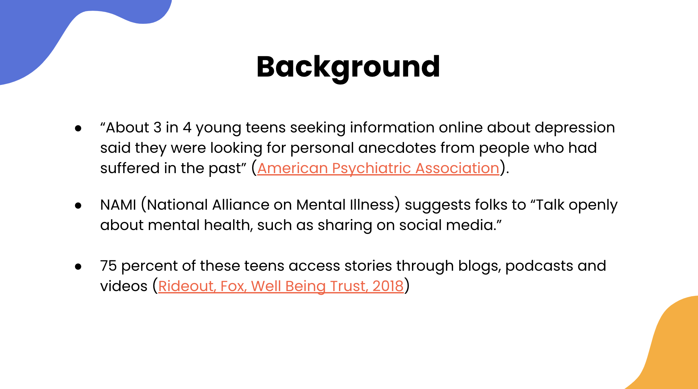
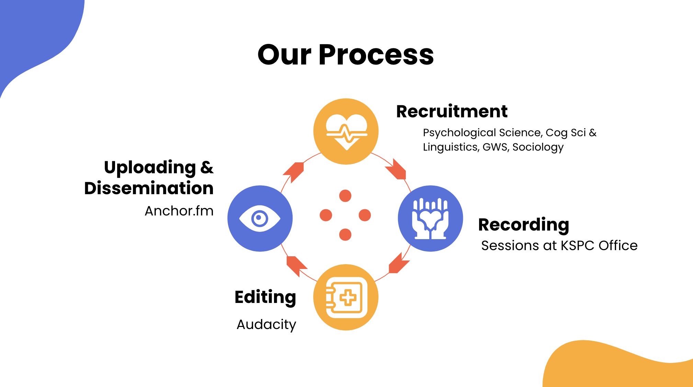

Listen here
As students in the class Psychological Disorders taught by Professor Masland, Aiste Abeciunaite (PO '25), JoJo Widi (PO '23), Laura Furtado Fernandes (PO '25), and I created a podcast that was aimed at deconstructing the stigma surrounding mental health and psychological disorders. We wanted students to understand that they are not alone and that their experiences with a psychological disorder are all so valid by targeting public and self stigma through indirect contact, sharing anecdotes from two professors from Pomona College in a podcast.
To do so, we first sent out multiple group and individual emails to faculty and staff in the Psychological Science, Cognitive Science, Linguistics, GWS, and Sociology departments. In our email, we informed them of our project goals and asked if they would like to partake in sharing their experiences with mental health. Thankfully, we got two professors from the sociology department (Professor Hernandez-Medina and Professor Thai), who agreed to partake in our project. After creating the scripts and questions, we recorded these interviews at the KSPC Office in Thatcher and edited the audio files on the platform Audacity. Finally, to upload our podcast for the world to hear, we uploaded it on Anchor.fm, which allowed us to disseminate our work online through Spotify.
Some of the topics we addressed in our interviews were centered on the professors' personal experiences with mental health, such as experiencing severe clinical depression and anxiety, along with the signs, symptoms, and coping strategies they used. We also talked about how these experiences have shaped them to be who they are now as professors at Pomona and how it affected their teaching and interactions with students. Along with these topics, resources available for help were addressed as well as how culture affects attitudes and stigma towards mental health, such as the effects of the model minority myth with Asian Americans. Give our podcast a listen! Yet, please be aware that sensitive topics including depression, anxiety, and suicide are addressed in this podcast.